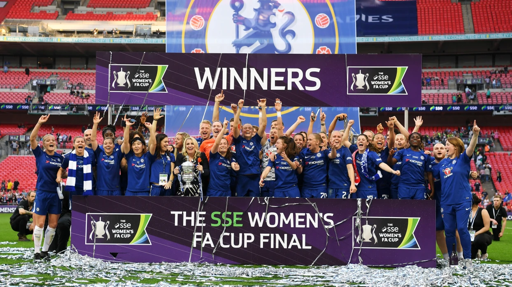
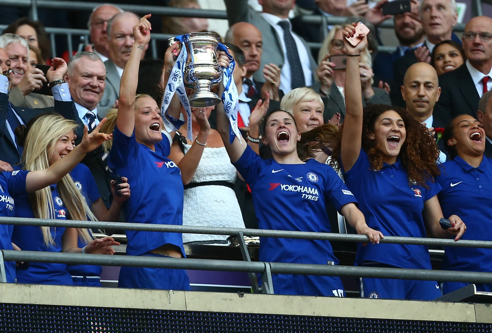
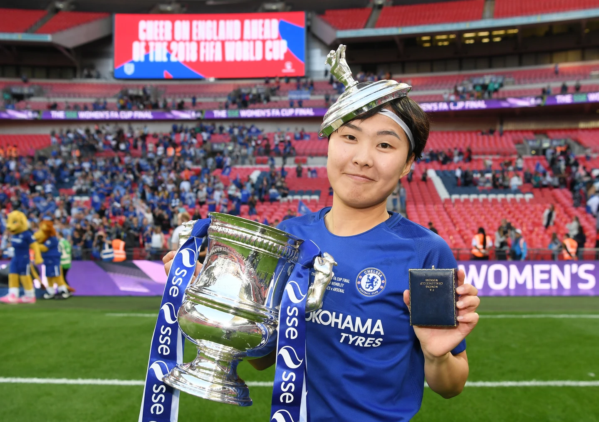
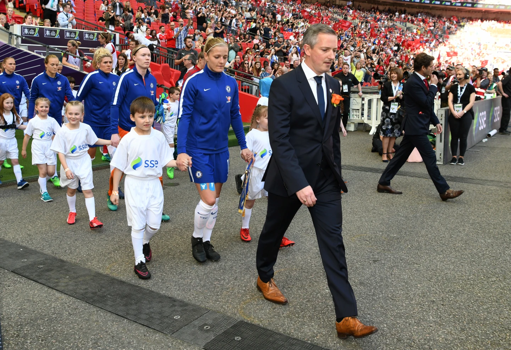
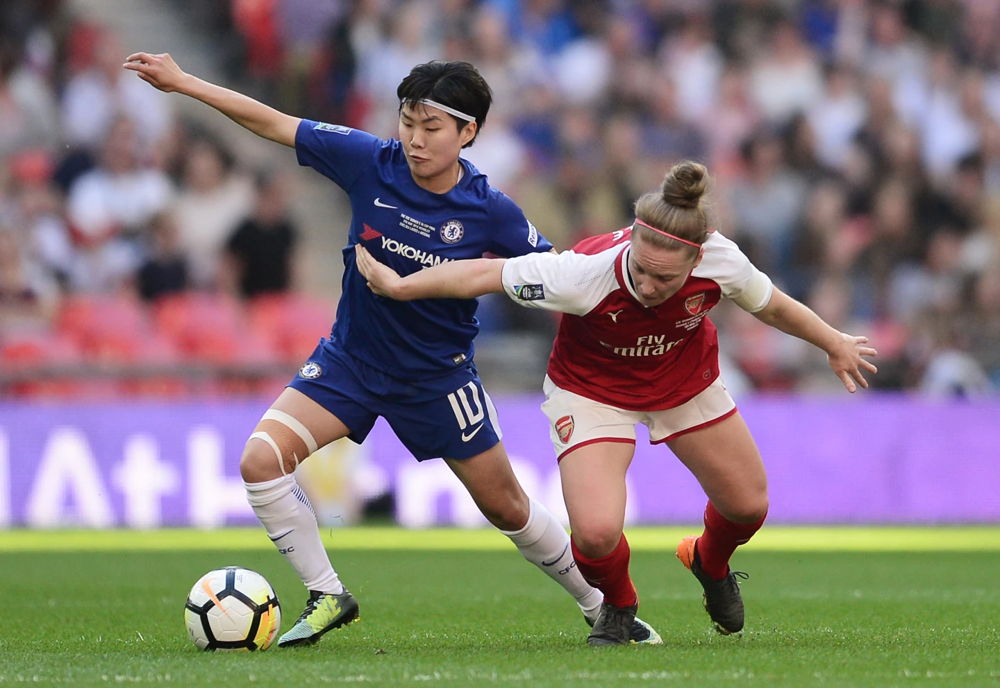
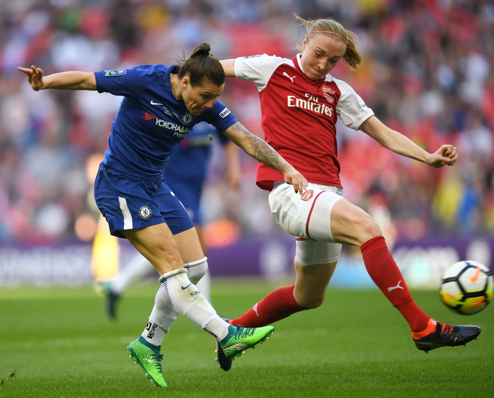
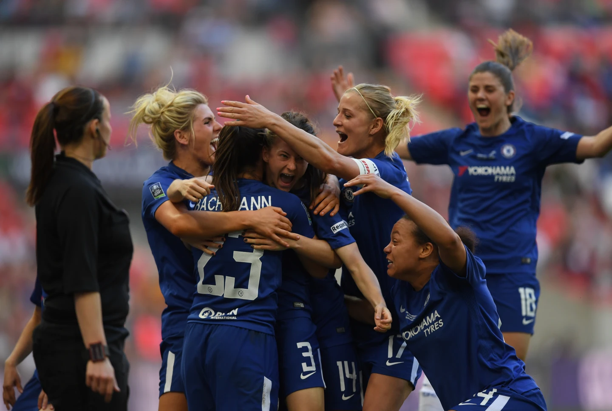
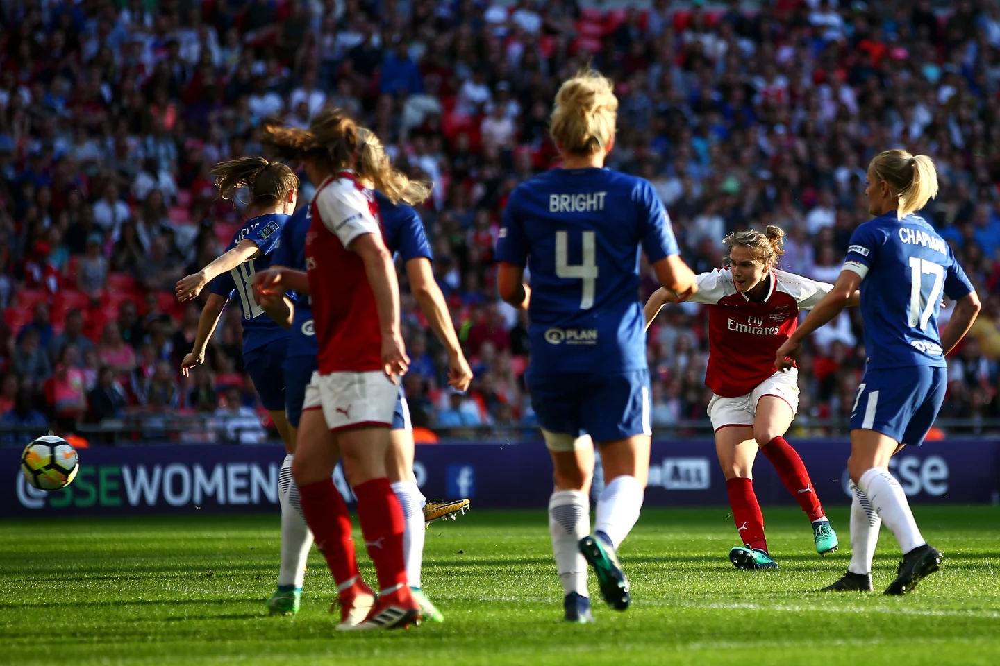
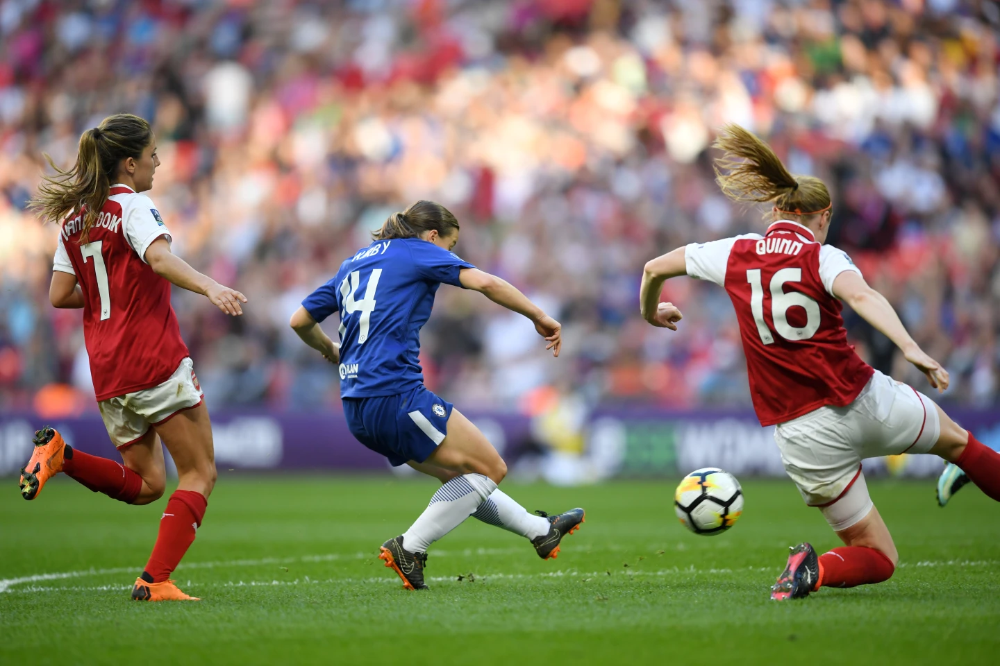

Chelsea Ladies lifted the Women's FA Cup for the second time after a brace from Ramona Bachmann and a wonderful finish from Fran Kirby secured a convincing win over Arsenal at Wembley.Chelsea Ladies ชู Trophy FA Cup หญิงเป็นครั้งที่ 2 หลังจาก 2 Goal จาก Ramona Bachmann และจบ Score อย่างยอดเยี่ยมจาก Fran Kirby ช่วยให้คว้าชัยชนะเหนือ Arsenal ที่ Wembley ได้อย่างน่าเชื่อ
There was little to separate the sides in the first half as London’s top two clubs met in front of a competition record crowd of more than 45,000 supporters at the national stadium, but Chelsea’s two frontwomen shone after the interval as Bachmann scored twice in quick succession before Kirby sealed the deal in the 76th minute.แทบไม่ต้องแยก Team ออกจากกันใน Half แรก เมื่อ 2 Club ชั้นนำของ London พบกันต่อหน้า Crowd ที่เป็น Record ของการแข่งขันที่มี Fan มากกว่า 45,000 คนที่ National Stadium แต่ Striker หญิงสองคนของ Chelsea ก็ฉายแววโดดเด่นหลังช่วง Half-time ขณะที่ Bachmann ทำ Goal 2 ครั้งติดต่อกันอย่างรวดเร็ว ก่อนที่ Kirby จะปิดข้อตกลงในนาทีที่ 76

The first goal from Bachmann was simply sensational, as she smashed home a wonderful finish to beat Sari Van Veenendaal at the near post, and that was followed up by a deflected strike on the hour mark to put us in the ascendancy.Goal แรกจาก Bachmann เป็น Goal ที่น่าตื่นตาตื่นใจ ขณะที่เธอยิง Ball เข้า Goal อย่างยอดเยี่ยมเพื่อเอาชนะ Sari Van Veenendaal ที่เสาแรก (Near post) และตามมาด้วยลูกยิงแฉลบ (Deflected strike) ในช่วง 1 ชั่วโมงที่ทำให้เราขึ้นนำ
Although the Gunners pulled a goal back soon after, there was no stopping us; Kirby magnificently curling home a brilliant third to ensure we left Wembley with the trophy.แม้ว่า Gunners จะดึง Goal กลับมาได้ไม่นานหลังจากนั้น แต่ก็ไม่สามารถหยุดเราได้ Kirby ทำ Goal ที่สามได้อย่างยอดเยี่ยม เพื่อให้แน่ใจว่าเราจะออกจาก Wembley พร้อมกับ Trophy
For the second time in two seasons, Chelsea and Arsenal met at the promised land of football for the biggest game in the English domestic season, and some sensational attacking meant on this occasion the Blues led from the front to avenge our defeat to the 14-time winners two years ago and win the cup for the second time, following on from our 2015 triumph over Notts County.เป็นครั้งที่ 2 ในรอบ 2 Season ที่ Chelsea และ Arsenal พบกันบนดินแดนแห่ง Football สำหรับ Game ที่ใหญ่ที่สุดใน Season ภายในประเทศของ England และเกมรุกที่น่าตื่นตาตื่นใจก็เกิดขึ้นในครั้งนี้ Blues ขึ้นนำจากแดนหน้าเพื่อล้างแค้นที่เราพ่ายแพ้ให้กับ Team Champion 14 สมัยเมื่อ 2 ปีที่แล้ว และคว้า Champion Cup เป็นครั้งที่ 2 ต่อจากชัยชนะเหนือ Notts County ในปี 2015

Emma Hayes named an attacking line-up for the trip to her local stadium; Jonna Andersson and Drew Spence re-joined the midfield in the only changes to the side who fought so hard in our Champions League semi-final defeat to Wolfsburg last weekend.Emma Hayes จัด Line-up แนวรุกสำหรับการเดินทางไปยัง Stadium ท้องถิ่นของเธอ Jonna Andersson และ Drew Spence กลับมาเล่นใน Position Midfield อีกครั้ง ซึ่งเป็นการ Change เพียงครั้งเดียวของ Team ที่ต่อสู้อย่างหนักในความพ่ายแพ้ต่อ Wolfsburg ใน Champions League รอบ Semi-final เมื่อสุดสัปดาห์ที่ผ่านมา
Spence bridged the gap between our box-to-box players and the familiar Kirby-Bachmann powerhouse up front, while Katie Chapman operated just ahead of the back three in what was her 11th FA Cup final, with Maria Thorisdottir and Eni Aluko dropping to the bench.Spence เชื่อมช่องว่างระหว่าง Player แบบ Box-to-box ของเรากับขุมพลัง Kirby-Bachmann ที่คุ้นเคยในแดนหน้า ขณะที่ Katie Chapman ทำผลงานอยู่หน้า Defender สามคนในรอบ Final FA Cup ครั้งที่ 11 ของเธอ โดยมี Maria Thorisdottir และ Eni Aluko นั่งเป็น Substitute บน Bench
The advanced areas were where Arsenal manager Joe Montemurro had the toughest decisions to make. The Australian opted for Vivianne Miedema, one of four Dutch players who won Euro 2017 in the Gunners starting XI, alongside Beth Mead going forward.พื้นที่แดนบน (Advanced area) คือจุดที่ Joe Montemurro Manager ทีม Arsenal ต้องตัดสินใจที่ยากลำบากที่สุด Manager ชาว Australia เลือก Vivianne Miedema 1 ใน 4 Player ชาว Dutch ที่คว้า Champion Euro 2017 จาก Team Gunners ลงเป็น Starting XI เคียงข้าง Beth Mead ในแนวรุก
Our highly-regarded assistant manager Paul Green had the honour of leading Chelsea out onto the hallowed Wembley turf, approaching the end of his fifth season with the club. It was an emotional occasion for the 41-year-old, as he was following in the footsteps of his father, the late Bill Green, who led Scunthorpe United to the Fourth Division play-off final in 1992.Paul Green Assistant Manager ที่ได้รับการยกย่องอย่างสูงของเราได้รับเกียรติในการนำ Chelsea ลงสู่ Pitch อันศักดิ์สิทธิ์ของ Wembley ซึ่งใกล้จะสิ้นสุด Season ที่ 5 ของเขากับ Club มันเป็นโอกาสอันซาบซึ้งสำหรับโค้ชวัย 41 ปีรายนี้ ในขณะที่เขาเดินตามรอยบิดาของเขา Bill Green ผู้ล่วงลับไปแล้ว ซึ่งพา Scunthorpe United เข้าสู่รอบ Final Play-off ของ Fourth Division ในปี 1992

Hayes, who is in the late stages of her pregnancy, watched on from the dugout, and there was little to agitate our manager during an enjoyable yet controlled start to the encounter. Bachmann came closest to an opening goal inside the first quarter of an hour, executing an outrageous turn on the edge of the penalty area and managing to nutmeg the last defender in the process, but her forceful strike flew narrowly wide of the far post.Hayes ซึ่งตั้งครรภ์ระยะสุดท้ายได้เฝ้าดูจาก Dugout และแทบไม่มีสิ่งใดที่จะทำให้ Manager ของเราปั่นป่วนระหว่างการเริ่มต้น Match อย่างสนุกสนานแต่ควบคุมได้ Bachmann เข้าใกล้ Goal เปิดเกมมากที่สุดในช่วง 15 นาทีแรก (Quarter of an hour) โดยพลิก Ball อย่างยอดเยี่ยมที่ขอบ Penalty Area และจัดการ Nutmeg (ลอดดาก) Defender คนสุดท้ายไปได้ แต่การยิง (Strike) อันทรงพลังของเธอบินหลุด Far Post ไปอย่างหวุดหวิด
Chelsea appeared to have the lion’s share of possession in important areas, with Hannah Blundell and Andersson given the license to charge into the rival half and practically skimming the touchline as Arsenal looked to catch us out on the counter-attack. Maren Mjelde was there to save our skin at one point with a key interception after Mead judged the bounce of a long ball just right and nearly got a clear run at Hedvig Lindahl in goal.Chelsea ดูเหมือนจะครอง Ball ในพื้นที่สำคัญได้มากกว่า โดย Hannah Blundell และ Andersson ได้รับอิสระให้บุกเข้าไปใน Half ของคู่แข่งและเติมเกมริม Touchline ขณะที่ Arsenal พยายามจะเล่นงานเราด้วย Counter-attack. Maren Mjelde อยู่ที่นั่นเพื่อช่วย Team ไว้ได้ในจังหวะหนึ่งด้วยการ Interception ที่สำคัญ หลังจากที่ Mead ตัดสินการ Bounce ของ Long Ball ได้อย่างพอดีและเกือบจะหลุดเดี่ยวไปดวลกับ Hedvig Lindahl ที่ Goal
Chapman was chomping at the bit to press at all opportunities as the Blues looked to get on the front foot after half an hour, pushing her side much higher up the pitch. Mexican waves swirled around the ground for what would have felt like ages for the Blues defenders as the north Londoners piled on the pressure midway through the half, culminating in a great chance for Miedema in dangerous territory.Chapman กระตือรือร้นที่จะ Press ในทุก Chance ขณะที่ Blues พยายามบุกขึ้นหน้าหลังจากผ่านไป Half hour โดยดัน Team ของเธอให้สูงขึ้นมากบน Pitch. Mexican Wave หมุนวนไปทั่ว Stadium สำหรับสิ่งที่รู้สึกเหมือนยาวนานมากสำหรับ Defender ของ Blues ในขณะที่ Team จาก North London กดดันอย่างหนักในช่วงกลางของ Half ซึ่งจบลงด้วย Chance ที่ดีสำหรับ Miedema ในพื้นที่อันตราย

Ji So-Yun, our goalscoring hero against Notts County in 2015, pulled the strings in a deeper role than previous cup finals, regularly receiving the ball inside the centre circle and predominantly holding up play for her team-mates. She did have a great chance inside the box, though, perhaps with more power than accuracy, and was kicking herself that she didn’t hit the target.Ji So-Yun Hero ผู้ทำ Goal ของเราใน Game กับ Notts County ในปี 2015 มี Role ที่ลึกกว่ารอบ Final Cup ครั้งก่อน โดยรับ Ball ใน Centre Circle อย่างสม่ำเสมอ และคอยดึงจังหวะ Play ให้เพื่อนร่วม Team ของเธอเป็นส่วนใหญ่ เธอมี Chance ที่ดีใน Box แม้ว่าบางทีอาจมี Power มากกว่าความแม่นยำ และรู้สึกเสียดายที่เธอทำไม่เข้า Target
The half-time break came and went with the two sides locked at 0-0, but we didn't have to wait until long after the break for the opener to arrive. It was Ji who set the breakthrough move in motion three minutes after the restart. The diminutive playmaker set up Bachmann for a one-two with Kirby before our Swiss superstar found a yard of space and pulled off an unstoppable finish into the top right corner. What composure from our centre-forward on the biggest stage! The 27-year-old had never even visited Wembley until this week but her whole family were in the crowd to relish this occasion.ช่วง Half-time ผ่านไปโดยที่ทั้งสองฝ่ายเสมอกันที่ 0-0 แต่เราไม่ต้องรอนานหลังพักครึ่งกว่า Goal แรกจะมาถึง Ji เป็นผู้เริ่มต้น Move ทะลุทะลวงใน 3 นาทีหลัง Restart. Playmaker ร่างเล็กรายนี้ตั้ง Ball ให้ Bachmann ทำ One-two กับ Kirby ก่อนที่ Superstar ชาว Swiss ของเราจะพบ Space และทำ Goal เข้ามุมบนขวา (Top right corner) อย่างไม่มีใครหยุดได้ ช่างเป็นความเยือกเย็น (Composure) จาก Centre-forward ของเราบน Stage ที่ยิ่งใหญ่ที่สุด! Player วัย 27 ปีรายนี้ไม่เคยมาเยือน Wembley เลยจนกระทั่งสัปดาห์นี้ แต่ Family ทั้งหมดของเธอต่างมาอยู่ใน Crowd เพื่อร่วมฉลองโอกาสนี้

Our No23 once again created an opening out of nothing when she picked up the ball on the right touchline, cutting inside and firing a left-footed shot which was deflected into the back of the net. On the Blues bench, even Hayes could not help jumping up to her feet in joy.Player No. 23 ของเราสร้าง Chance จากความว่างเปล่าอีกครั้งเมื่อเธอรับ Ball จาก Touchline ด้านขวา ตัดเข้าใน (Cut inside) และยิงด้วยเท้าซ้ายซึ่งแฉลบเข้าก้นตาข่าย บน Bench ของ Blues แม้แต่ Hayes ก็อดไม่ได้ที่จะกระโดดลุกขึ้นยืนด้วยความดีใจ

However, any thoughts of a straightforward stroll to the title quickly went out the window, as Arsenal quickly, albeit briefly, got back in the game after pulling a goal back through Miedema. Mead, the standout attacker for the north Londoners, freed herself on the left flank and headed for the byline, then flicked the ball back to the Dutchwoman, who tucked home a left-footed strike which left Lindahl with no chance. It seemed as though more work would be required from Mjelde, Millie Bright, Magdalena Eriksson and the rest of the Blues defence as the game headed towards a thrilling finale.อย่างไรก็ตาม ความคิดใดๆ เกี่ยวกับการคว้า Champion อย่างสบายๆ ก็หายไปอย่างรวดเร็ว ในขณะที่ Arsenal กลับเข้าสู่ Game ได้อย่างรวดเร็วหลังจากดึง Goal กลับมาจาก Miedema. Mead Attacker ที่โดดเด่นของ Team ลอนดอนเหนือ หลุดไปทางปีกซ้ายและมุ่งหน้าไปที่ Byline จากนั้นจ่าย Ball กลับไปให้ Player ชาว Dutch ที่ยิงด้วยเท้าซ้ายเข้า Goal ไป ซึ่งทำให้ Lindahl ไม่มี Chance เซฟ ดูเหมือนว่า Mjelde, Millie Bright, Magdalena Eriksson และ Defender ที่เหลือของ Blues จะต้องเจองานหนักเพิ่ม ในขณะที่ Game มุ่งหน้าสู่ช่วงท้ายที่น่าตื่นเต้น

It was the first goal Chelsea had conceded in the Women's FA Cup this term, scoring 21 goals over our first four ties as we produced rip-roaring displays to see off London Bees and Doncaster Rovers Belles before we beat two of our biggest WSL1 rivals, Liverpool and Man City. And the concession simply spurred us back into action in the attacking third.นี่เป็น Goal แรกที่ Chelsea เสียใน Women's FA Cup ใน Season นี้ โดยทำไป 21 Goal ใน 4 Tie แรกจาก Form การเล่นอันร้อนแรงที่เอาชนะ London Bees และ Doncaster Rovers Belles ก่อนที่เราจะเอาชนะ 2 คู่แข่ง (Rivals) รายใหญ่ที่สุดใน WSL1 อย่าง Liverpool และ Man City. และการเสีย Goal นี้ก็เป็นเพียงการกระตุ้นให้เรากลับมาทำเกมรุก (Attacking third) อย่างเต็มที่อีกครั้ง
As always, Super Fran Kirby was on hand with a fabulous finish less than three minutes later to restore our two-goal advantage. The Blues top scorer collected a pass from Blundell inside the box, shifted the ball onto her feet and curled a perfect left-footed shot past Sari van Veenendaal, bagging her 23rd goal of the campaign and by far the most decisive yet!เช่นเคย Super Fran Kirby มาพร้อมกับการจบ Score อย่างยอดเยี่ยมในเวลาไม่ถึง 3 นาทีต่อมา เพื่อดึงความได้เปรียบ 2 Goal ของเรากลับมา Top Scorer ของ Blues รับ Pass จาก Blundell ใน Box แต่ง Ball เข้าเท้า และปั่นโค้งด้วยซ้ายอย่างสมบูรณ์แบบผ่าน Sari van Veenendaal เป็น Goal ที่ 23 ของเธอใน Campaign นี้ และเป็น Goal ที่เฉียบขาดที่สุด!
Although her strike partner did more than enough to deserve the Player of the Match prize for the final, our fleet-footed forward showed exactly why she has been named the PFA and Football Writers’ Women’s Player of the Year. The trophy-clinching goal took her FA Cup tally to six goals, including a crucial brace against Man City in the semi-final in Kingston.แม้ว่าคู่หู Striker ของเธอจะทำผลงานได้ดีพอที่จะสมควรได้รับรางวัล Player of the Match สำหรับรอบ Final แต่ Forward ตัวเก่งของเราก็แสดงให้เห็นอย่างชัดเจนว่าทำไมเธอถึงได้รับเลือกให้เป็น Women's Player of the Year ของ PFA และ Football Writers. Goal ตัดสิน Trophy นี้ทำให้ยอดรวมใน FA Cup ของเธอเพิ่มเป็น 6 Goal รวมถึง 2 Goal สำคัญในรอบ Semi-final ที่พบกับ Man City ที่ Kingston
